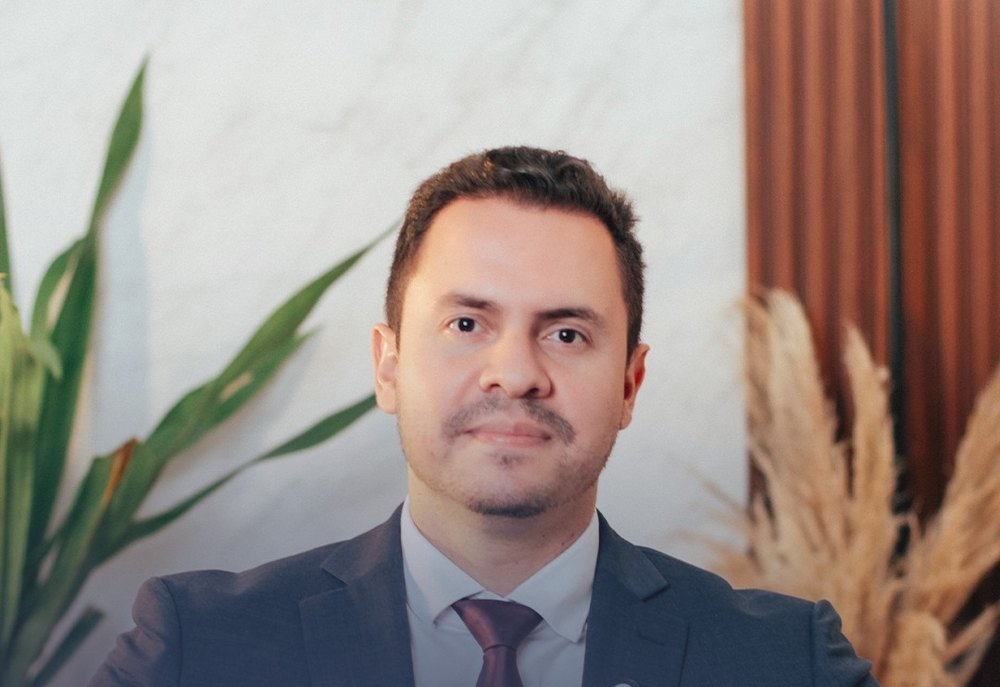
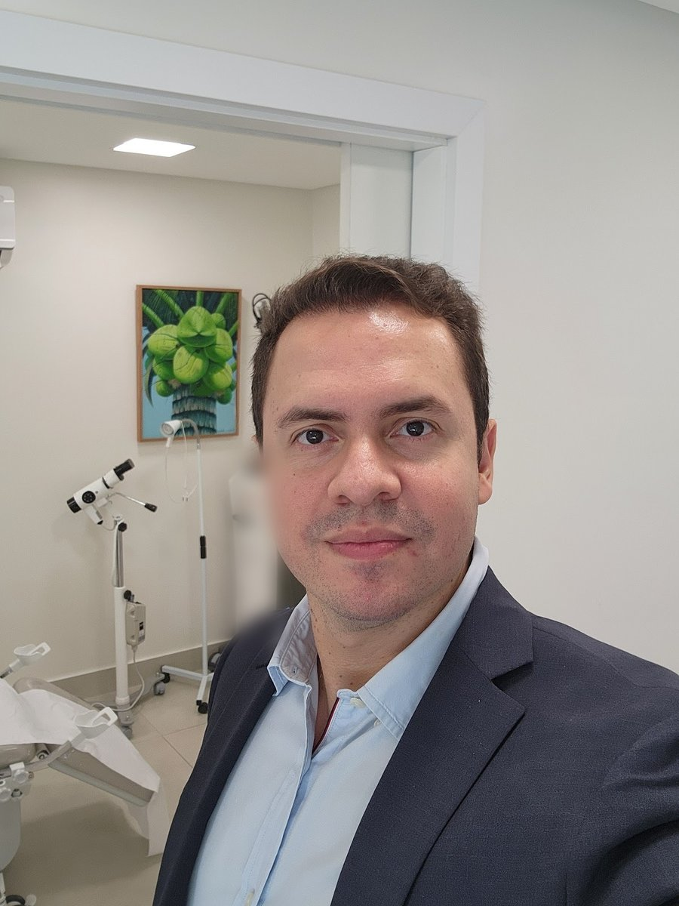
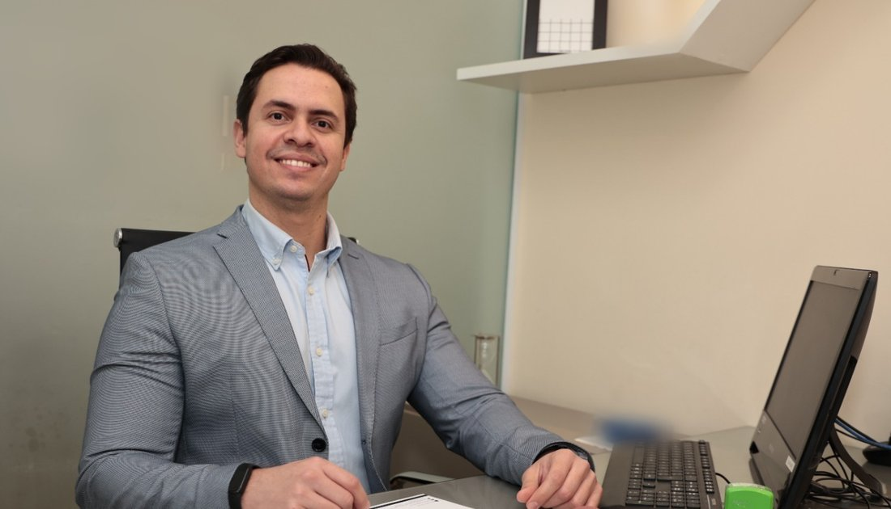

Membro Especialista da Sociedade Brasileira de Cirurgia Plástica
Dr. Helden NunesCirurgião plástico em Salvador
Cirurgia das mamas, lipoaspiração, abdome e cirurgia reparadora, com consultório no Rio Vermelho. Formado na Escola Bahiana, com residências no HUPES/UFBA e no Hospital São Rafael.
- CRM-BA
- 25676
- RQE
- 19122
- Título SBCP
- 2020
- Consultório
- Sala 703 · Rio Vermelho

Por onde começar
Qual é a sua dúvida hoje?
Escolha o assunto e leia com calma antes da consulta. A informação é geral; a indicação é sempre individual, definida em consulta.
Volume, queda ou peso das mamas
Aumento com prótese de silicone, mastopexia e redução: o que cada cirurgia faz.
Cirurgia das mamasContornoGordura localizada que não sai
O que a lipoaspiração trata — e o que ela não trata.
LipoaspiraçãoAbdomePele e músculos depois da gestação
Excesso de pele, gordura e afastamento dos músculos do abdome.
AbdominoplastiaReparadoraReconstruir ou corrigir uma função
Reconstrução e correção de sequelas: a cirurgia plástica que repara.
Cirurgia reparadoraPlanejamento em camadas
Quatro folhas sobre a mesma prancheta.
Cada camada só se desenha sobre a anterior: a cirurgia sai do plano, e o plano sai da avaliação. Nas palavras do próprio Dr. Helden, numa legenda sobre cirurgia das mamas:
“Volume, perfil, posição da prótese e técnica de sustentação foram definidos a partir da anatomia e das queixas apresentadas na consulta.”Instagram, 24/07/2026 · ver a publicação
- Camada 01
Avaliação
Ouvir a queixa e examinarHistória de saúde, exame físico, medidas e o que incomoda no dia a dia. É aqui que uma queixa de “falta de volume” pode se mostrar também flacidez.
QueixaExameMedidas - Camada 02
Plano
Definir antes de operarTécnica, cicatrizes, exames e avaliação pré-operatória, riscos e expectativa, combinados com antecedência.
TécnicaExamesRiscos - Camada 03
Cirurgia
Executar o que foi planejadoEm hospital, com anestesia e equipe. Tempo de cirurgia e de internação informados antes, conforme o procedimento.
HospitalAnestesiaEquipe - Camada 04
Recuperação
Acompanhar cada faseRevisões marcadas, cintas ou sutiã cirúrgico quando indicados e retorno gradual às atividades. Os prazos variam de pessoa para pessoa.
RevisõesOrientaçõesRetorno
Formação em três hospitais
Da Bahiana ao título da SBCP.
Toda a formação do Dr. Helden foi feita em Salvador: a graduação na Escola Bahiana, a cirurgia geral no hospital universitário da UFBA e a cirurgia plástica no Hospital São Rafael. Cada estação tem a fonte pública ao lado.
- GraduaçãoEscola Bahiana de Medicina e Saúde Pública
Medicina.
Perfil na SBCP - 2014–2016HUPES · UFBA
Residência em cirurgia geral no Hospital Universitário Prof. Edgard Santos.
SBCP · CNES - ResidênciaHospital São Rafael
Residência em cirurgia plástica em Salvador.
SBCP · CNES - 2020Título da SBCP
Aprovado no exame de título de especialista em Cirurgia Plástica; hoje Membro Especialista da SBCP.
Lista oficial de 2020 - HojeRio Vermelho e Rede D'Or
Consultório no Rio Vermelho e atendimento no Centro Médico São Rafael, em São Marcos.
Rede D'Or

Na voz do Dr. Helden
A queixa nem sempre é o que parece.
“À primeira vista, pode parecer apenas falta de volume, mas também pode ter flacidez.”
Dr. Helden Nunes, legenda no Instagram, 24/07/2026 · ver a publicação
Na mesma legenda, ele conclui que essa dúvida se esclarece na consulta. É por isso que, nesta prévia, cada página de cirurgia termina no mesmo lugar: no exame e na conversa, antes de qualquer decisão.
Estética e reparadora
A cirurgia plástica tem dois lados.
Na página de médicos da Rede D'Or, o Dr. Helden aparece em “Cirurgia Plástica | Cirurgia Plástica Reparadora”, no Centro Médico São Rafael – Unidade São Marcos. As duas frentes usam a mesma formação e o mesmo cuidado no planejamento.
Forma e contorno
Mamas, lipoaspiração e abdome: cirurgias que mudam forma e proporção, quando há indicação.
Cirurgia das mamasReconstrução e função
Reconstrução depois de tumores e traumas e correção de sequelas que atrapalham o dia a dia.
Cirurgia reparadoraPara conferir
O trabalho do Dr. Helden em fontes públicas.
A sociedade de especialidade, a lista do título, a Rede D'Or e o Instagram. Tudo com link, para você conferir.
Categoria “Associado (Membro Especialista)”, CRM, RQE e o currículo publicado por ele.
Ver o perfil ↗SBCP · 2020Aprovados no exame de título de especialistaA lista oficial de 2020 traz o nome Helden Henrique Vilas Boas Nunes.
Ver a lista ↗Rede D'OrCentro Médico São RafaelCirurgia Plástica e Cirurgia Plástica Reparadora, na Unidade São Marcos.
Ver a página ↗Instagram@dr.helden.nunesO perfil do Dr. Helden, com as publicações do consultório.
Abrir o perfil ↗Onde atendo
Sala 703, no Rio Vermelho.
Consultório no Centro Médico Empresarial Vitraux. Atendimento com hora marcada: confirme dia e horário pelo WhatsApp.

Centro Médico Empresarial VitrauxR. Eduardo José dos Santos, 43, sala 703 · Rio Vermelho · Salvador – BA · 40210-755
Dia e horário são combinados pelo WhatsApp (71) 99929-2558. Confirme antes de ir.
Dúvidas frequentes
Perguntas comuns
Onde fica o consultório?
No Centro Médico Empresarial Vitraux: R. Eduardo José dos Santos, 43, sala 703, Rio Vermelho, Salvador. Veja o mapa e como chegar.
Como agendar uma consulta?
Pelo WhatsApp (71) 99929-2558. Dia e horário são combinados na conversa.
Qual é o horário de atendimento?
Com hora marcada. Confirme dia e horário pelo WhatsApp antes de ir.
O Dr. Helden é membro da Sociedade Brasileira de Cirurgia Plástica?
Sim. Na busca pública da SBCP, ele aparece na categoria “Associado (Membro Especialista)”, e o nome dele está na lista oficial de aprovados no exame de título de especialista de 2020. Registro CRM-BA 25676 · RQE 19122.
Ele atende em outro lugar além do Rio Vermelho?
A Rede D'Or lista o Dr. Helden no Centro Médico São Rafael – Unidade São Marcos, em Cirurgia Plástica e Cirurgia Plástica Reparadora. Veja onde atendo.
A primeira consulta já define a cirurgia?
A consulta serve para examinar, entender a queixa e explicar o que cada cirurgia pode e não pode fazer, com riscos, cicatrizes e recuperação. A indicação é individual, e a decisão é sua.
Aceita convênio? Quanto custa?
Confirme pelo WhatsApp as condições de atendimento.
Agende
Cada plano começa numa consulta.
Atendimento com hora marcada no Rio Vermelho (Centro Médico Empresarial Vitraux, sala 703). Confirme dia e horário pelo WhatsApp (71) 99929-2558.